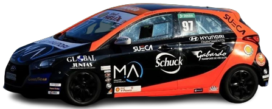
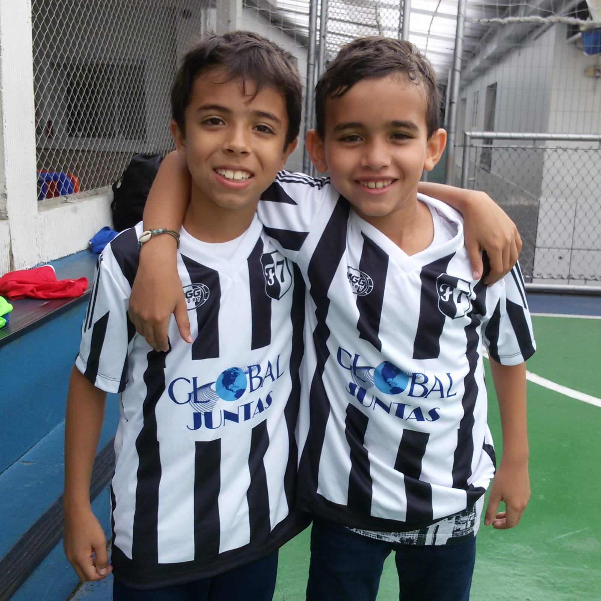
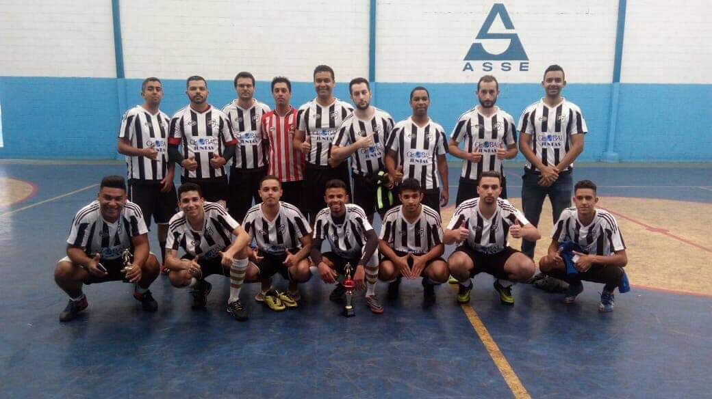

"Investimos em tecnologia para melhor atendê-lo"
Fundada em 2003, a Global Juntas se estabeleceu no mercado automotivo como referência em qualidade e tecnologia. Alinhada com as melhores práticas do mercado automobilistico, tanto em segurança quanto em sustentabilidade trabalhamos com as prensas hidráulicas importadas mais recentes e atuais em termos de tecnologia, e por meio delas fabricamos juntas automotivas de centenas de fabricantes para todo o mercado de reposição de automóveis.
Composta por profissionais altamente qualificados que trabalham em harmonia a Global Juntas entrega produtos de altíssima qualidade, se consolidando como empresa líder no comercio de juntas e acessórios automotivos. "Para sermos referência no setor automotivo, investimos em tecnologia e prezamos pela qualidade de nossos produtos, bem como a motivação e a alegria de nossos colaboradores" FLORES, Thiago (CEO e co-fundador da Global Juntas).
Empresa líder em fabricação e comercio de juntas e peças automotivas.

Copa Shell HB20
Patrocinador oficial da equipe XXXXXX na Copa Shell HB20 desde 2020.
HB20 com peças Global Juntas pilotado por Luiz Sena Jr. em 2023.
A Global Juntas participa como patrocinador ativo da equipe XXXXXX na Copa Shell HB20, onde no seu ano de estreia (2020) alcançamos o segundo lugar geral da copa e a vitória na ultima corrida do campeonato.
Com atuações incríveis nos últimos anos o atleta, engenheiro mecânico e multicampeão Luiz Sena Jr. conseguiu levar o nome da Global Juntas ao pódio da Copa HB20 2023. Sendo este um marco histórico de nossa parceria automobilistica.
HB20 com peças Global Juntas pilotado por Luiz Sena Jr. em 2023.
Futebol Amador e Corrida
Patrocinador master da equipe de Futebol Amador e de Corrida Fúria 7 Futebol Clube.
Atleta Alan da equipe F7 Running em uma meia maratona de 21k.
Desde 2009 com atuações vitoriosas em festivais e amistosos no futsal, society e futebol de campo. A Global Juntas se orgulha de ter feito parte dessa história de sucesso, onde foram revelados diversos craques dentro das quadras e do campo. Com centenas de partidas disputadas a equipe F7 se consolidou no futebol amador da zona sul de São Paulo e também em Indaiatuba, trazendo com ela a logomarca Global Juntas, firmando uma parceria grandemente vitoriosa.
Atletas Thiago Ribeiro e Raphael do sub-09.
Equipe F7 de futsal.